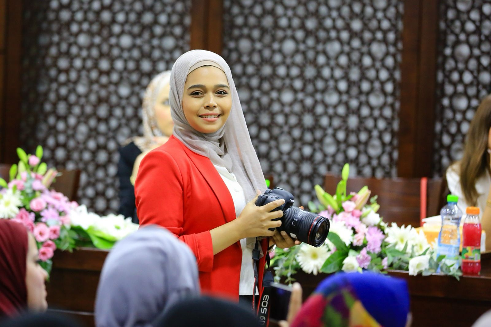
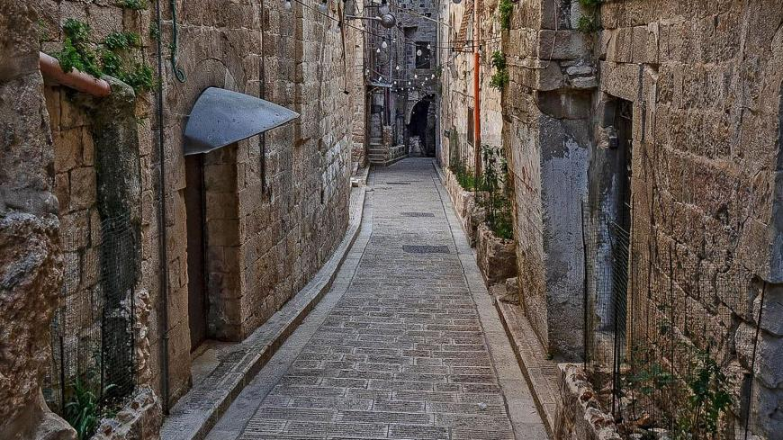

Hey friends! I'm Ranya.
By day, I'm the story-crafter for Nablus University- NUVTE, covering everything from student life to high-stakes meetings with the university president.
Between juggling translations and shaping the university's public image, you'll find me watching silly cats videos, doing sports, or getting lost in the pages of a good book. Loud laugh included!
In the midst of it all, my motto is simple: "Trust your struggle".
Located in a strategic position between Mount Ebal and Mount Gerizim, Nablus is considered the largest commercial and cultural center in Palestine.
In the center of Nablus lies the old city, composed of six major quarters: Yasmina, Gharb, Qaryun, Aqaba, Qaysariyya, and Habala.
Habala is the largest quarter and its population growth led to the development of two smaller neighborhoods: al-Arda and Tal al-Kreim.
